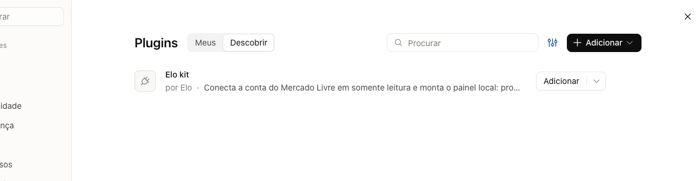
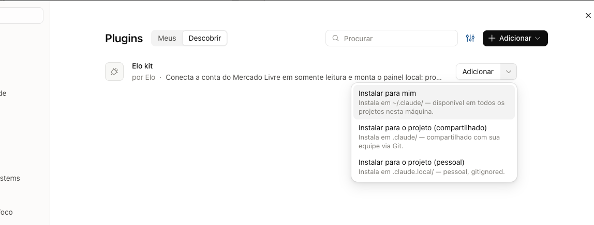
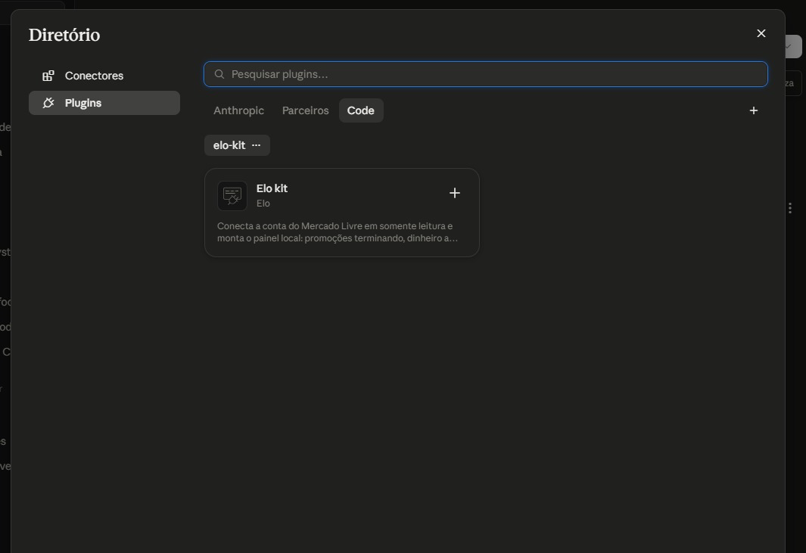
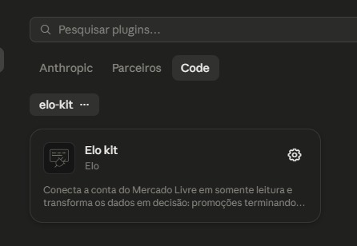

Em cerca de 15 minutos, no seu computador, sem ninguém junto. Você vai sair com um painel que mostra as promoções que estão acabando e o que vale aderir.
prometheus · github.com/sebemlabs-agents/prometheus
Isso não é promessa de texto: o programa recusa qualquer tentativa de alteração antes de a chamada sair do seu computador. E você pode desligar o acesso quando quiser — está explicado no fim.
prometheus. Não coloque dentro do Dropbox, do iCloud, do Google Drive nem do OneDrive — esses serviços copiam tudo para a nuvem, e a chave da sua conta não pode ir junto. O programa verifica isso e para, se for o caso.C:\Users\<seu nome>\prometheus.E o Python? Não precisa conferir nada antes. O pacote usa Python, e a primeira coisa que o Claude faz é procurar na sua máquina. Se faltar, ele avisa e te manda o link — leva dois minutos e não atrapalha o resto.
Pelo aplicativo, sem terminal. Configurações → Plugins, botão + Adicionar no canto superior direito, Adicionar marketplace, e então Adicionar de um repositório. Cole:
sebemlabs-agents/prometheus
Use essa forma curta, não a URL inteira do GitHub. Se a máquina já tiver o catálogo registrado, a URL completa é recusada como se fosse outra fonte.
Depois disso o prometheus aparece na lista. A tela de instalar tem duas versões, dependendo da sua versão do aplicativo — as duas funcionam, e o resultado é o mesmo.


Clique em Adicionar e, no menu, escolha Instalar para mim.
É a opção que vale em qualquer pasta desta máquina. As outras duas prendem o plugin a um projeto só.


Na janela Diretório, vá na aba Code e clique no + do cartão. Não pergunta nada: instala para você.
Pronto quando o + virar uma engrenagem e aparecer o aviso "Elo kit está instalado e pronto para uso".
Uma coisa só, depois de instalar: peça ao Claude "liga a atualização automática do prometheus". O pacote ganha skills novas e correções com o tempo, e isso vem desligado por padrão — sem ligar, você fica parado na versão de hoje. Ele pergunta antes de mexer e guarda cópia da sua configuração.
Importante nas duas: a aba certa é a Code. O pacote roda comandos no seu computador, e isso só existe no Claude Code — não na conversa comum.
Se preferir o terminal: claude plugin install prometheus --marketplace sebemlabs-agents/prometheus faz os dois passos de uma vez (precisa do Claude Code 2.1.292 ou mais novo; confira com claude --version).
Dá para instalar, mas nem tudo é igual — vale saber antes de escolher por onde ir.
Funciona, testado: instalar o pacote. Os programas não dependem do Claude; a conexão com o Mercado Livre é a mesma e continua sendo só leitura.
Muda: não existe o caminho pelo menu — é por comando:
codex plugin marketplace add sebemlabs-agents/prometheus
codex plugin add prometheus@prometheus
Não funciona: a atualização automática. Lá ela não existe, e pedir "liga a atualização automática" vai dar erro — o pacote procura uma pasta de configuração que é do Claude.
Em troca, a manual funciona e está testada. Rode de vez em quando, e você recebe tudo que saiu desde a sua instalação:
codex plugin marketplace upgrade prometheus
Não testamos: conectar uma conta do Mercado Livre de ponta a ponta pelo Codex. E as telas que este guia cita — menu de plugins, pasta conectada, domínios permitidos — são do Claude; no Codex a permissão de pasta funciona de outro jeito. O caminho existe, mas aí você vai estar abrindo trilha.
Recomendação: se esta é a sua primeira vez, vá de Claude. Volte para o Codex depois, com a conta já conectada e funcionando.
Abra o Claude e conecte a pasta que você criou no passo anterior. É ali que tudo vai morar: os arquivos, o painel e a chave de acesso.
Escreva para o Claude, com estas palavras ou parecidas:
conecta minha conta do Mercado Livre
A partir daqui ele conduz. Vai te levar a criar um aplicativo no site de desenvolvedores do Mercado Livre, pedir que você copie dois códigos para um arquivo da pasta, e cuidar do resto. Siga o que ele pedir, um passo de cada vez, e confirme cada etapa antes de seguir.
O momento que assusta — e é normal.
Na hora de autorizar, você vai colar um endereço no navegador, fazer login no Mercado Livre e clicar em autorizar. Aí a página vai dar erro, dizendo que não conseguiu abrir o endereço.
Isso é esperado e está certo. O endereço não existe de propósito — é assim que o código de autorização fica só na barra do seu navegador, sem passar por servidor de ninguém. É só copiar o endereço inteiro da barra e colar onde o Claude pedir.
Cole a mensagem de erro no Claude — ele tem a tabela de problemas e sabe o que fazer. Estes são os cinco casos mais comuns:
| O que você vê | O que fazer |
|---|---|
| "a pasta está dentro de um serviço de sincronização" | Crie a pasta em outro lugar, fora do Dropbox, iCloud, Drive ou OneDrive, e recomece dali. Não tente contornar — é a sua chave de acesso que está em jogo. |
Alguma coisa sobre redirect_uri ou "client callback" | O endereço cadastrado no Mercado Livre precisa ser idêntico ao que está no arquivo da pasta. Compare letra por letra, inclusive a barra no final. |
invalid_operator_user_id | Você autorizou com uma conta de operador. Refaça com a conta administradora da loja. |
Erro falando de permissão, ou o número 403 | Falta marcar uma permissão no aplicativo que você criou. Peça ao Claude para revisar as permissões com você. |
| Todas as consultas falham, mesmo com tudo certo | O endereço api.mercadolibre.com precisa estar liberado nas configurações do Claude. Se a sua conta é de empresa, quem libera é o administrador dela. |
Se nada disso resolver, pare e chame. Não fique tentando variações — quase sempre é um detalhe de um caractere.
No fim, o Claude mostra um resumo com:
Experimente perguntar, em português normal:
A decisão continua sendo sua. O pacote mostra o número e sugere a prioridade; aderir ou não a uma promoção você faz no painel do Mercado Livre, como sempre fez. E margem depende do custo dos seus produtos, que o Mercado Livre não conhece — se quiser ver margem, vai precisar informar seus custos.
A qualquer momento, no site de desenvolvedores do Mercado Livre, em Minhas aplicações, você abre o aplicativo que criou e revoga a permissão. O acesso para na hora.
No seu computador, basta apagar a pasta. Não fica nada em lugar nenhum além dela.